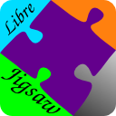

|  | ¿¿¿Help??? |
Spinning Tile Puzzle |
There are seven tiles that must be moved into place by spinning them three at a time.
- To spin clockwise:
Click on the puzzle at the intersection of three pieces. The pieces will spin around each other. - To spin counter-clockwise:
Hold down the 'shift' key while clicking. The pieces will spin in a counter-clockwise direction.
For further information or assistance:
visit
speedduck.net
or contact
jon.hulka@gmail.com